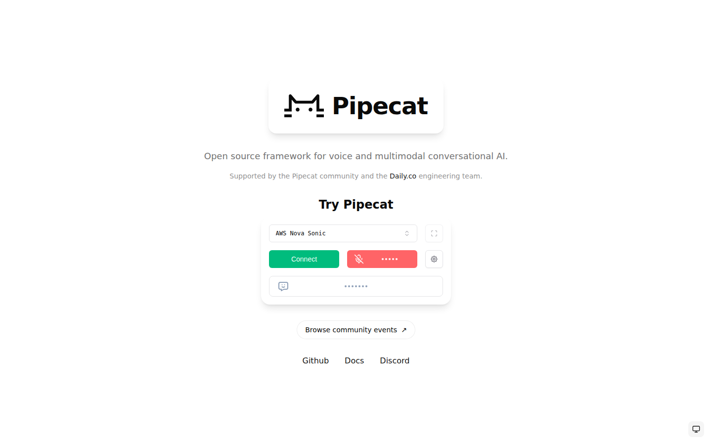

Construire un agent vocal sans recâbler STT + LLM + TTS à chaque fois
Pipecat n'est pas un produit de collecte clé en main : c'est la brique technique pour construire le sien. Il orchestre speech-to-text, LLM, text-to-speech et transport temps réel (WebRTC) dans un pipeline unique, à faible latence.
Un pipeline modulaire, 40+ services branchables
On assemble en Python (ou JavaScript / React / iOS / Android / C++) un pipeline : entrée audio → STT → LLM → TTS → sortie. Chaque bloc est un plugin — OpenAI, Anthropic, Deepgram, ElevenLabs, Cartesia, AWS, etc. Le framework gère les interruptions, les tours de parole, le multimodal.
Outils associés — Voice UI Kit (composants front), Whisker (debugger temps réel), Tail (dashboard terminal). Déploiement possible sur Pipecat Cloud (géré par Daily) ou en self-host.
Interface
Capture de la page d'accueil — pipecat.ai.

Lecture objective
Pour
- Open source (BSD 2-Clause), self-host possible.
- Contrôle total : choix des modèles, des voix, de l'infra.
- 40+ services IA branchables en plugins.
- SDKs multi-plateformes (Python, JS, React, iOS, Android, C++).
- Outils de dev dédiés (Voice UI Kit, Whisker, Tail).
Contre
- Ce n'est pas un produit utilisateur : il faut développer.
- Aucune analyse ni UI de résultats incluse.
- Coûts cachés : facturation à l'usage des services tiers (STT, LLM, TTS).
- Courbe d'apprentissage réelle pour un profil non-dev.
Tarification publique
Framework — gratuit, open source. Pipecat Cloud — hébergement managé par Daily.co, tarification à l'usage. Les services IA branchés (STT, LLM, TTS) sont facturés séparément par leurs fournisseurs respectifs.